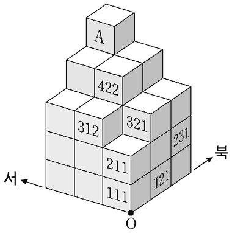

데카르트 좌표계
지문을 먼저 읽고, 이해가 막히는 문단에서 ‘그림으로 보기’를 누르세요. 그림은 문단을 따라 바뀝니다.
1문단근대 철학의 아버지라고 불리는 ㉠데카르트는 수학 분야에서도 불후의 업적을 남겼다. 『방법서설』의 부록인 ‘기하학’에서 데카르트는 일견 단순해 보이는 ‘좌표’라는 개념을 제시했는데, 이 개념으로 그는 해석(解析) 기하학의 토대를 놓았고 그 파급 효과는 엄청났다. 수학자 라그랑주는 이에 대해 “기하학과 대수학이 서로 다른 길을 걸어오는 동안에는 두 학문의 발전이 느렸고, 적용 범위도 한정되어 있었다. 그러나 두 학문이 길동무가 되어 함께 가면서 서로 신선한 활력을 주고받으며 완벽을 향해 빠른 발걸음을 옮기고 있다.”라고 묘사했다.
2문단데카르트의 업적을 기리기 위해, 직교하는 직선들이 만드는 좌표계를 데카르트 좌표계라고 부른다. 통상적으로 이 좌표계의 가로축은 ‘x축’, 세로축은 ‘y축’이라고 하며 두 축이 교차하는 지점을 ‘원점’이라고 한다. 이것을 3차원으로 확장하려면 x축과 y축을 포함하는 평면에 수직으로 원점을 지나도록 ‘z축’을 세우면 된다. 데카르트는 방 안에 날아다니는 파리의 순간적인 위치를 나타낼 방법을 찾다가 이 좌표 개념을 생각해 냈다고 한다. 서로 직교하는 세 평면 각각에서 파리가 있는 곳까지의 거리를 알면 파리의 위치가 정확하게 결정되는 것이다. 누군가가 목표 지점까지 가는 방법을 알려 달라고 했을 때, “동쪽으로 세 블록, 북쪽으로 두 블록 가시오.”라고 대답했다면 당신은 데카르트 좌표계를 사용하고 있는 셈이다.
3문단데카르트의 발견은 좌표를 이용하여 모든 기하학적 형태를 수의 집합으로 나타낼 수 있다는 것을 의미한다. 가령, 좌표 평면의 원점에서 5만큼 떨어져 있는 모든 점들을 연결하면 원이 얻어진다. 피타고라스의 정리를 이용하면 이 원 위에 있는 점 (x, y)는 원의 방정식 x²+y²=5²을 만족시킨다는 것을 쉽게 증명할 수 있다. 이 원 위의 (4, 3)이라는 점은 4²+3²=5²이므로 이 방정식을 만족시킨다. 이렇게 대수학의 방정식으로 평면 위의 도형을 정확하게 나타낼 수 있다.
4문단전통적으로 도형을 다루는 수학은 기하학이었다. 고대 그리스 이래 기하학은 자명한 명제인 공리에서 출발하여 증명을 통해 새로운 정리들을 발견해 가는 연역적 방법을 사용해 왔다. 그렇지만 이러한 방법으로 도형을 다루는 것은 매우 까다로웠다. 이 상황에서 데카르트가 좌표 개념을 도입하자 직선, 원, 타원 등 여러 가지 도형을 대수학의 방정식으로 표현할 수 있게 되었다. 이로부터 기하학과 대수학이 연결되어 근대적인 수학 발전의 토대가 된 해석 기하학이 탄생하였다.
위 글을 바탕으로 <보기>를 이해한 내용으로 적절하지 않은 것은? [3점]
그림과 같은 건물에 있는 31개의 사무실에 데카르트 좌표계를 활용하여 호수를 지정하고자 한다. 먼저 모든 사무실이 같은 크기의 정육면체임을 주목한다. 건물의 모퉁이 O점을 원점으로 삼고 k축은 위쪽, l축은 북쪽, m축은 서쪽으로 향하도록 설정한다. 각 사무실의 8개의 꼭짓점 중 원점에서 가장 먼 꼭짓점의 좌표 (k, l, m)을 세 자리의 수 ‘klm’으로 만들어 그 사무실의 호수로 정한다. 가령, 원점에 접한 사무실은 111호, 그 위층은 211호이다. 그 밖의 몇 개의 사무실의 호수는 그림에 표시되어 있다.
